PPF S179 (Levy) Valuations¶
SuperVal can run a PPF S179 (Levy) valuation. You can define the relevant PPF assumptions within SuperVal and these will then override the assumptions set up for ongoing runs. This will allow you to use the set-up for the ongoing runs to carry out PPF runs without having to recreate basis files.
The following points are relevant for the general set up of SuperVal.
- There are no special member-data requirements for PPF valuations.
- When selecting the Scheme Folders, check PPF Calculations Required on the Data tab to enable the PPF parameters within the basis files.
- SuperVal introduces the concept of Scheme PPF Assumptions. Information on how to use them is set out below.
This article is based on V9.30.01 of SuperVal.
Defining PPF assumptions and recording yields¶
Firstly, ensure the PPF Yields, Caps and Mortality and Spouse's override parameters are up to date and contain the relevant yields and cap data for the valuation date.
(Select Tables > PPF from the main menu.)
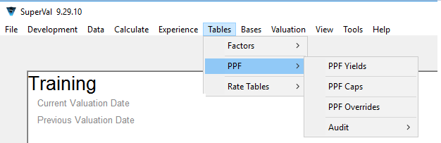
Define each of the PPF Yields, PPF Caps and PPF Overrides.
You can create multiple copies of the PPF Overrides but only one set of Yields or Caps.
These will be saved in the SVPPFFILE.SF in the Library Folder of SuperVal.
Each of these screens is discussed below.
PPF Yields¶
To add or amend data use the Add Row(s) or Edit Row button at the bottom of the page.
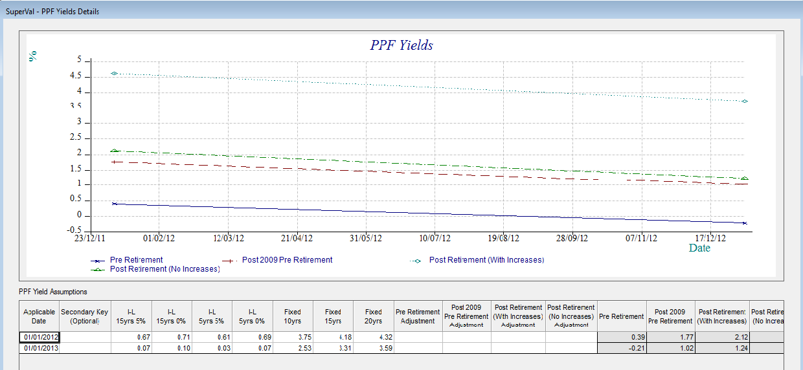
SuperVal expects biannual yields, which it converts to annualised yields
SuperVal uses the Yield date to establish which relevant assumptions guidance should be used, and applies the prescribed method to calculate the assumptions used in the S179 valuation.
Additional functionality
The Secondary Key introduces the ability to have two different sets of yields defined at the same date. Attach a Secondary Key to a set of yields by typing in a value in the relevant column, e.g., 1, 2, 3. This can be a numeric value or a character string.
When selecting the yields in the Scheme PPF tab, choose a set of yields, e.g., 01/05/2021 1, 01/05/2021 2, etc.
SuperVal V9 also lets you specify an adjustment to each of the calculated interest rates for PPF valuations. The adjustment made is additive i.e. if the calculated yield is 3.25% and 0.25 is entered, the revised yield will be 3.50%.
Non-revaluing pensions
SuperVal makes no allowance for the non-revaluing pre-retirement yield as this applies only if all benefits for all members are non-revaluing.
If you need this functionality then the revaluing pre-retirement yield can be manipulated using the fields discussed above.
PPF Cap screen¶
To add or amend data use the Add Row or Edit Row button at the bottom of the page.
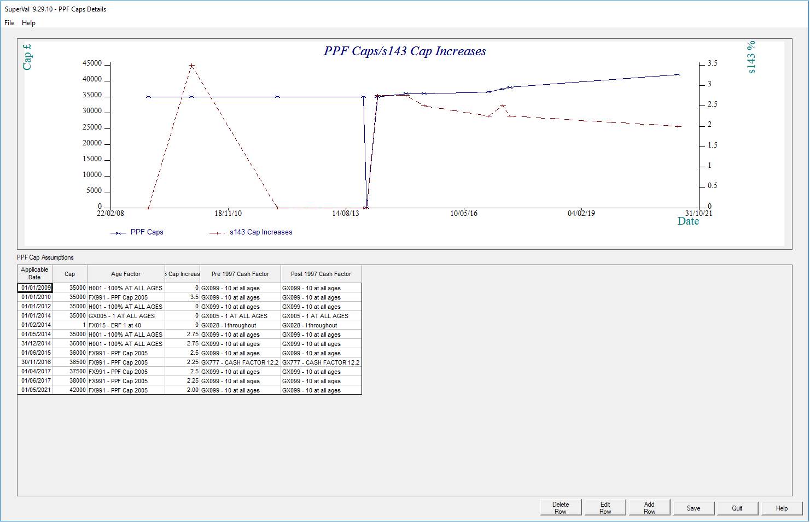
- Compensation Cap
-
Enter the amount of the Compensation Cap as at the Applicable Date at Age 65.
SuperVal will apply 90% to the results for members below Normal Pensionable Age after comparing with the Compensation Cap. Enter the full amount here (e.g. £39,006.18 as at 1 April 2022).
- Age Factor
-
The Compensation Cap entered is that applicable to benefits payable at age 65.
For benefits payable at ages other than 65, the Compensation Cap needs to be multiplied by either a reduction or increase factor for ages below or above age 65 respectively. The PPF have prescribed these factors and they are published on their website.
- Pre 1997 and Post 1997 Cash Factor
-
(for retirement Cash-on-Top benefits only)
The PPF has prescribed factors for converting Pre 1997 and Post 1997 lump sums into Pensions. The published rates need to be converted into commutation factors to be input into SuperVal.
The factors entered will be used to convert any retirement Cash-on-Top benefit to pension equivalents. This amount plus the member’s retirement pension will then be compared with the Compensation Cap and the result will then be multiplied by 90% if below Normal Pensionable Age.
- Cap increases for long serving members
-
The system was adapted from V9.11 onwards to allow for the increase in the compensation cap for a PPF Cap date on or after 6 April 2017.
The system calculates service according to dates specified by the user in the basis file on the PPF/Cap tab and applies an uplift of 3% p.a. simple for each year over 20 years (subject to a limit of 2 times).
Override screen¶
Firstly select the parameter file containing the overrides you wish to edit. Different parameter files can be used to contain different sets of overrides. To enter a new set of overrides use the Default button. This will open the PPF Overrides Details screen.
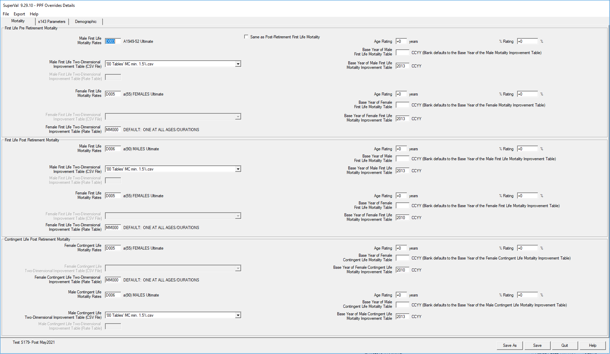
Specify the relevant mortality and mortality improvement tables (Pre- and Post-retirement) with any appropriate adjustment, the proportion married for spouses and partners and the age difference here. The assumptions will be chosen from a list of all of those available in the Decrement File. Next to each table the description of the table is shown.
PPF Legislation from 1 May 2021 states to use different contingent mortality rates. In V9.29 (and versions following), separate Rate Tables have been added for contingent lives as new fields on the PPF Overrides page.
Use % Rating to specify a scalar adjustment to the table entered.
For a 90% adjustment enter 10.
For all other valuations ensure this is set to 100% by using an
adjustment of 0.
Setting up scheme PPF information¶
For all three modules, add scheme-level information by selecting Bases > Scheme > PPF from the main menu.
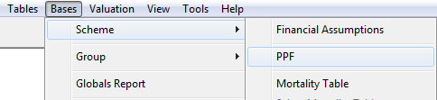
Within this screen choose the yields, caps and override parameters to use in this scheme’s Input Folder.
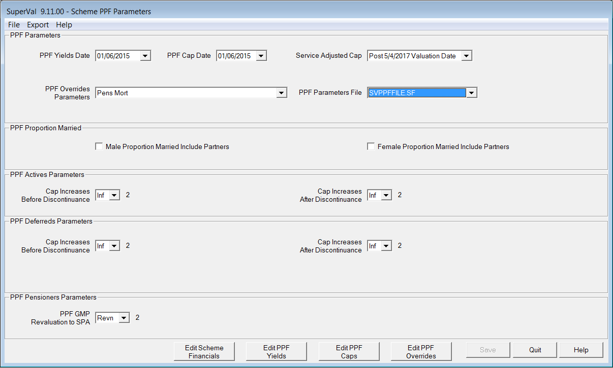
- Service Adjusted Cap
-
This field has three options:
- Yes
-
Always apply the 3% p.a. simple increase to the cap for any service above 20 years regardless of the date
- No
-
Never apply the 3% p.a. simple increase to the cap
- Post 5/4/2017 Valuation Date
-
Apply the long-service increase to the cap if the valuation is after 5 April 2017
- Proportion married
-
Use the check box to specify whether the Proportion married includes civil partners or not.
Click Edit PPF Overrides at the bottom of the page to check what the override assumptions are.
The proportion married chosen will only apply at the PPF NPA. Allowance for the survivorship of the spouse will be made thereafter.
- Cap Increases Before/After Discontinuance (Actives and Deferreds)
-
These fields are not used for PPF S179 (Levy) valuations, but will be used for Non PPF Capped runts.
- PPF GMP Revaluations to SPA (Pensioners)
-
This field can also be used to adjust the revaluation of GMP benefits before State Pension Age applied in a PPF S179 (Levy) Valuation where GMP benefits have not yet come into payment for pensioners (e.g. those with pension tranches at different NRAs).
Since 2008, PPF S179 (Levy) Valuations for deferred members are required to assume the benefits are increasing in deferment unless the benefits for all deferred members do not increase. As this situation is unlikely under UK legislation, SuperVal has been set up to assume all pensions are increasing in deferment. This field can be used to adjust the net yields used by SuperVal in deferment if required. To use, select the relevant parameter from those defined in the Global Parameters. If no adjustment is required leave this field blank.
Setting up Active basis files for PPF runs¶
Select a category from a basis file using Bases > Group > Actives.
For PPF S179 (Levy) valuation purposes, active members will be assumed to leave service on the Valuation Date. The Scheme PPF assumptions and overrides selected above will apply.
The determination of the part of the pension that increases and does not increase in payment and the treatment of the GMP is discussed below.
Financial tab¶
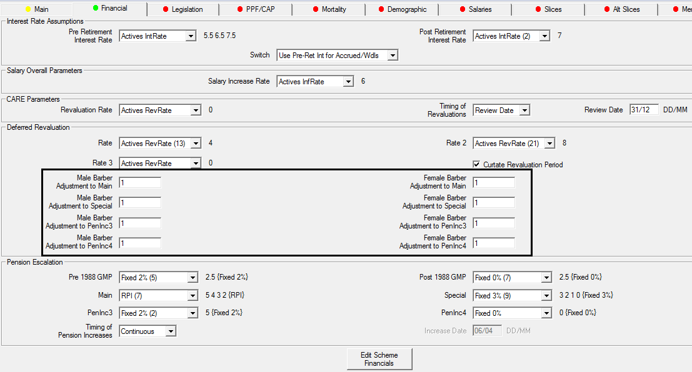
Adjustment factors
SuperVal ignores anything to do with Main, Special, PenInc3 and PenInc4 for PPF runs, and therefore the adjustment factors in the Deferred Revaluation section are made redundant. Loading of different parts of the pension for PPF is handled on the Slices as discussed below.
PPF inputs on PPF/CAP tab¶
At the bottom of the PPF/CAP tab, a button links to the scheme’s PPF information.
Some additional information in relation to the PPF valuation will be defined once at category level on the PPF/CAP tab. See below:
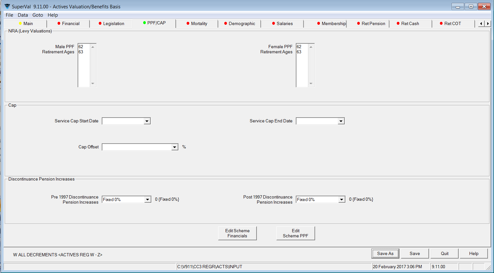
- Male and Female PPF Retirement Ages
-
Specify up to four Normal Retirement Ages for males and females separately.
- Service Cap Start Date and Service Cap End Date
-
These fields are used to work out the pensionable service in conjunction with the long-service cap increase. The use of these fields depends on the settings in the PPF Scheme Details.
- Cap Offset %
-
If an active member is already receiving a retirement pension from this or another scheme, then the Compensation Cap at retirement can be reduced to reflect this. Select the data item containing the percentage of the Compensation Cap already used. SuperVal will then take account of this when determining any restriction in benefits due to the Compensation Cap at future retirement ages.
- Pre 1997 and Post 1997 Discontinuance Pension Increases
-
These fields are not used for PPF S179 (Levy) valuations. They are used only in the non-PPF capped runs, however the Relevance Rules will require the user to enter a relevant parameter for this variable before proceeding.
PPF inputs on Slices, Alt Slices and Ind Slices tabs¶
Some additional information is defined on the Slices, Alt Slices and Ind Slices tabs.
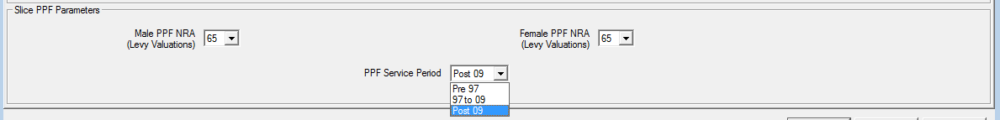
- PPF NRA (Levy Valuations)
-
Select the PPF Normal Retirement Age for each slice from the list previously defined on the PPF/CAP tab.
- PPF Service Period
-
Specify whether a particular slice of benefit is in respect of
Pre 97,97 to 09orPost 09service and it will be valued accordingly for PPF purposes. - PPF Adjustment Factor (field)
-
In SuperVal V9, the PPF Adjustment Factor is found on the Tier tab, which sits alongside the Slice tab. Enter the appropriate value. Note that :adjustment factors can be fixed or member-specific.
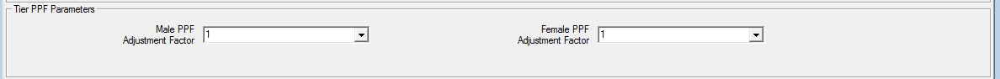
Issues to watch out for¶
Active members will be valued as deferred members, so attention needs to be paid to the specification of benefits on the Leaving tab. (This is particularly important if there is no withdrawal decrement in the ongoing basis.)
Members who are over Normal Retirement Age¶
If a member has any benefits that would have been payable from a NRA prior to their current age, SuperVal will value the benefit from their current age and ignore the 90% adjustment.
For example, consider a member aged 63 who has 2 benefits. The first one has a PPF NRA60 and the second a PPF NRA65. The NRA60 benefit will be valued from age 63, ignoring the cap and without the 90% adjustment (and no adjustment for late retirement). The NRA65 benefit will be valued from age 65, with a 90% adjustment. When applying the cap, benefits already in payment are ignored.
GMPs¶
For active members, SuperVal will ignore the GMP in a PPF S179 (Levy) valuation.
Cash on Top¶
Where the scheme provides a retirement Cash-on-Top benefit in addition
to pension then all the options will be available in the PPF run except
for 25% Pension, IR Max Cash and % of pension. If one of these
options is selected then the PPF S179 (Levy) Valuation will ignore the
Cash on Top benefit.
SuperVal will split the liabilities in relation to cash-on-top between
Pre 97, 97 to 09 and Post 09.
SuperVal will ignore retirement cash provided through commutation of pension for PPF Valuation purposes as prescribed by the PPF.
Which adjustment factors are applied?¶
The adjustment factors in the Deferred Revaluation section on the Financial tab are redundant for PPF runs.
Any PPF adjustment factors specified in the benefit slices are applied before the application of the Compensation Cap.
Any (non-PPF) Pension Adjustment Factors are also included. These are applied before the benefit is compared with the Compensation Cap.
Final pensionable salary¶
If you have included details of Final Pensionable Salary as at Valuation Date in your data, then be sure to include it under Initial Final Average Salary in the relevant salary definition. (See screenshot below.) If you don't define Final Pensionable Salary here, then SuperVal will estimate one using the Initial Salary, the averaging period given and the salary-escalation rate defined.
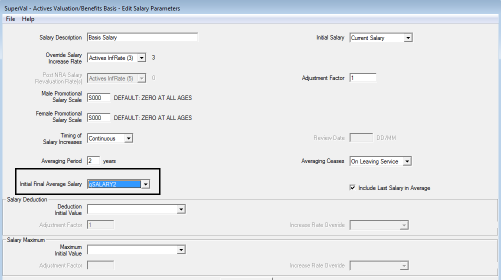
Ind Slices and Alt Slices¶
Benefits valued on the Ind Slices and Alt Slices tabs are included in the PPF S179 (Levy) valuations.
When using Alt Slices tab, if the benefits described bite then these benefits will be compared to the Compensation Cap. For those below NRA the 90% adjustment will also be applied. Select which of the PPF Service Periods should be used.
For Ind Slices, if the member is below NRA then SuperVal will then apply the 90% adjustment and value the benefit. For members above NRA the 90% adjustment is not applied. Please note that benefits on the Ind Slices tab will not be restricted by the Compensation Cap. Select which of the PPF Service Periods should be used.
Setting up Deferred basis files for PPF runs¶
Select a basis file using Bases > Group > Deferreds.
PPF inputs on the PPF/CAP tab¶
Select the scheme PPF information by clicking on Edit Scheme PPF on the PPF/CAP tab. The rest of the tab is identical to the Actives tab.
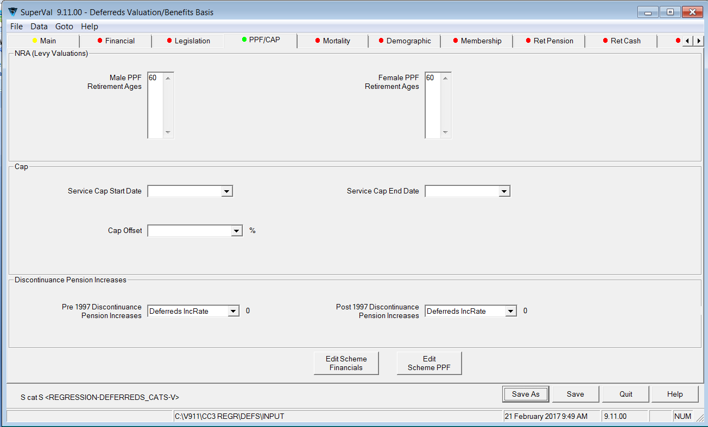
- PPF Male and Female Retirement Ages
-
You can specify up to four Normal Retirement Ages for males and females separately.
- Service Cap Start Date and Service Cap End Date
-
These fields are used to work out the pensionable service in conjunction with the long-service cap increase. The use of these fields depends on the settings in the PPF Scheme Details.
- Cap Offset %
-
If a deferred member is already receiving a retirement pension from this or another scheme, then the Compensation Cap at retirement can be reduced to reflect this.
Select the data item containing the percentage of the Compensation Cap already used. SuperVal will then take account of this when determining any restriction in benefits due to the Compensation Cap at future retirement ages.
Pre-1997 and Post-1997 Discontinuance Pension Increases
These fields are not used for PPF S179 (Levy) valuations. They are used only in the non-PPF capped runs; however you must in the Relevance Rules enter a relevant parameter for this variable before proceeding.
PPF inputs on PUPs tab¶
- PPF Service Period
-
Specify whether a particular PUP is in respect of
Pre 97,97 to 09orPost-09service and it will be valued accordingly for PPF purposes.
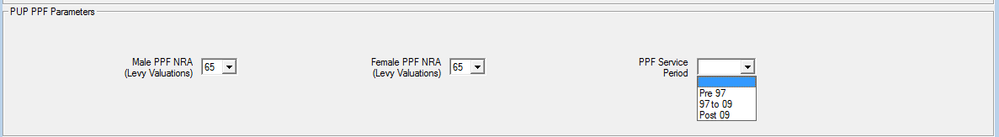
PPF inputs on Legislation tab¶
You can also select a Normal Retirement Age to be attached to the GMP (which is converted into excess pension) for PPF S179 (Levy) valuations on the Legislation tab. SuperVal will add GMP to Pre-1997 benefit and value appropriately, depending on the selection for Franking in Deferment.
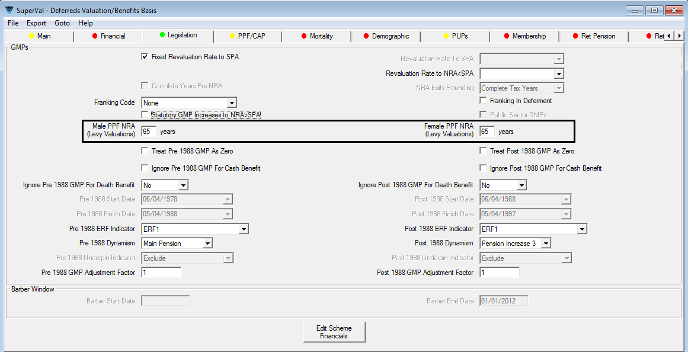
If Franking in Deferment on the Legislation tab is
- checked
-
SuperVal will take the greater of the pre-97 pension on the PUPs tabs and the GMP at Date of Valuation and use this value as the pre-1997 benefit ignoring any further effects of GMP.
- unchecked
-
The GMP is treated as another pre-1997 pension, payable from the age specified on the Legislation tab.
Other issues to watch for¶
Members who are over Normal Retirement Age¶
If a member has any benefits that would have been payable from a NRA prior to their current age, SuperVal will value the benefit from their current age and ignore the 90% adjustment.
For example, consider a member aged 63 who has 2 benefits. The first one has a PPF NRA60 and the second a PPF NRA65. The NRA60 benefit will be valued from age 63, ignoring the cap and without the 90% adjustment (and no adjustment for late retirement). The NRA65 benefit will be valued from age 65, with a 90% adjustment. When applying the cap, the NRA 60 benefit is ignored.
Non-standard and independent PUPs¶
SuperVal includes Ind PUPs in PPF runs. For members below NRA the benefit will be adjusted by 90%. The benefits on these tabs will not be restricted by the Compensation Cap.
NSPUPs remain excluded.
Which adjustment factors are applied?¶
The PUP adjustment factors on the PUPs screens are included. These are applied before the benefit is compared with the Compensation Cap
GMP adjustment factor is also included and is applied before the benefit is compared with the Compensation Cap.
Cash on Top¶
Any cash-on-top benefit is valued only if it has been set up either as a
Multiple of Pension or as a Cash Data Item.
Setting up Pensioner basis files for PPF S179 runs¶
Select a basis using the Bases > Group > Pensioners.
Version 8.40 onwards of SuperVal will cap/reduce pensioner benefits as required when doing a PPF run.
PPF inputs on the PPF/CAP tab¶
Select the Scheme PPF information by clicking Edit Scheme PPF on the PPF/CAP tab. Most of this tab is identical to the Actives and Deferred tabs.
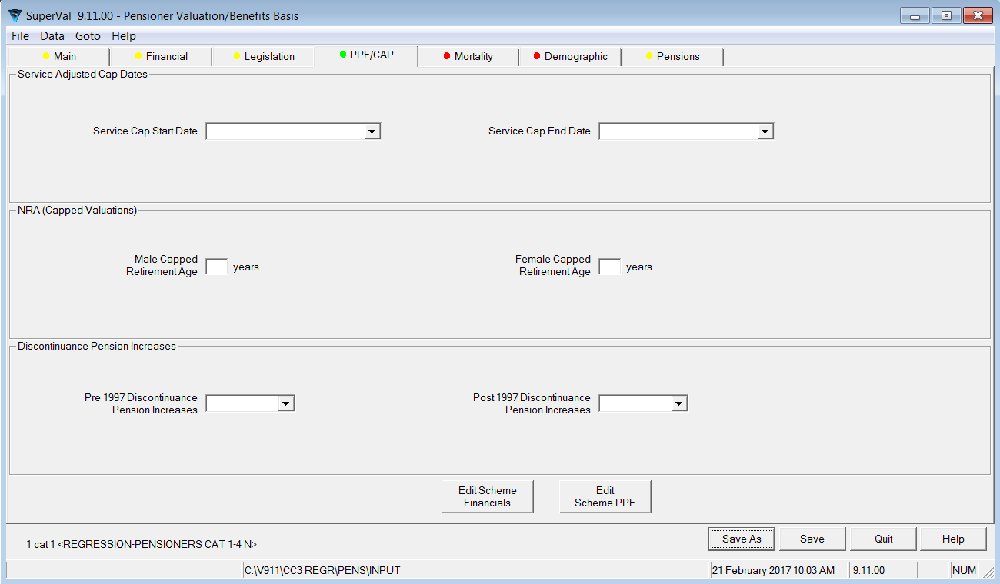
- Service Cap Start Date and Service Cap End Date
-
These fields are used to work out the pensionable service in conjunction with the long-service cap increase. The use of these fields depends on the settings in the PPF Scheme Details.
- NRA (Capped Valuations)
-
The capped retirement age is used to determine whether the overall benefits are above or below the cap.
This has been done to be consistent with the Active and Deferred modules which use the Normal Retirement Age rather than the PPF NRA’s in capped runs. Anyone aged above the capped retirement age will have all the benefits uncapped.
- Pre 1997 and Post 1997 Discontinuance Pension Increases
-
These fields are not used for PPF S179 (Levy) valuations.
They are used only in the non-PPF capped runs; however you must in the Relevance Rules enter a relevant parameter for this variable before proceeding.
PPF inputs on the Legislation tab¶
Within the pensioner module the link to the Scheme PPF information is found on the Legislation tab. Other fields on this tab that need to be considered are documented below.
PPF Normal Retirement Ages
Enter the PPF Normal Retirement Ages that should be used for GMPs to determine whether benefits should be capped/reduced.
PPF inputs on the Pensions Tab¶
There are a number of fields relevant to a PPF S179 (Levy) Valuation on the Pensions tab for pensioners.
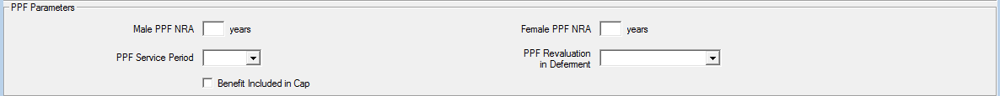
- PPF Normal Retirement Ages
-
Enter the PPF Normal Retirement Age that applies for each pension.
SuperVal will use this age to determine whether the 90% adjustment is applied to that pension. In addition, when applying the Compensation Cap, SuperVal will ignore any pensions where the PPF NRA is before the member’s current age.
You may need to set up extra categories for ill-health retirement cases and set the PPF NRA to a suitably low age for these categories. This will ensure no capping or benefit reduction applies to any of the pension (if required).
- PPF Service Period
-
Specify whether the pensions included on the Pensions tab are
'Pre 97','97 to 09'or'Post 09'. - PPF Revaluation in Deferment
-
This field can be used to adjust the revaluation applied in a PPF S179 (Levy) valuation where benefits have not yet come into payment for pensioners (e.g. those with pension tranches at different NRAs).
Since 2008, PPF S179 (Levy) valuations of deferred pensions are required to assume the benefits are increasing in deferment unless the benefits of all deferred members do not increase.
As this situation is unlikely under UK legislation, SuperVal has been set up to assume all pensions are increasing in deferment. This field can be used to adjust the net yields used by SuperVal in deferment if required. To use, select the relevant parameter from those defined in the Global Parameters. Where no adjustment is required, select a Global Parameter set to 0.
- Benefits Included in Cap
-
SuperVal V9 has been amended to let you select whether or not benefits from a particular tab are included when comparing to the Compensation Cap.
In previous versions of SuperVal pensions were ignored for capping purposes if
- a temporary pension was being valued (benefit ceasing age is not 120); or
- Value Pension Increases Only? was set to
Yes; or - Value Spouse_s Reversion Only? was set to
Yes.
Capping for Pensioners under the PPF run is undertaken in two stages.
Firstly, any benefits which are subject to the Compensation Cap which are already in payment are added and compared to the Compensation Cap at the members's age last birthday on the Valuation Date. These benefits are capped pro-rata.
Secondly, any benefits which are subject to the Compensation Cap but not yet in payment are compared to the proportion of the Compensation Cap not yet used. The Compensation Cap used is that for the highest PPF NRA for the member. These benefits are then capped pro-rata.
Other issues to watch for¶
Application of proportion married in Pensioner module¶
PPF guidance states that you must use a proportion married consistent with 90%/80% (males) or 80%/70% (females) at Normal Pension Age for pre-31 October 2009 valuations and rates of 85%75% (males) or 75%/65% (females) for post-30 October 2009 valuations. Hence, for pensioners SuperVal will adjust the proportion-married percentage by a survival factor for the spouse from Date Pension Commenced (DPC) to the valuation date.
SuperVal V9 has been amended to allow for both base mortality and mortality improvements when determining the probability of survival for the spouse between the Date Pension Commenced (DPC) data field imported into SuperVal and the valuation date.
SuperVal will always use the standard data item field Date Pension Commenced (DPC) when calculating the spouse’s survival probability i.e. it will ignore any entry in the Benefit Commencing Age field in the Pensions tab.
GMPs¶
GMPs are ignored if Reduce Pensions at SPA is checked and treated as another pre-97 pension if Reduce Pension at SPA is unchecked.
The spouse’s element valued will be 50% of both the pre-1988 and post-1988 GMP for all members. Revaluation will at the PPF GMP Revaluation to SPA specified in the scheme PPF parameters.
The GMP PPF Age will be used to determine if the benefit is capped or not.
Expenses¶
SuperVal does not make an automatic allowance for expenses in the PPF S179 (Levy) Valuations in any of the modules.
Assumptions overridden¶
The following assumptions are overridden for a PPF run:
| Module | Parameter | Action Taken |
|---|---|---|
| All | Post Retirement Interest Rates | Ignored |
| All | Pension increases in payment | Ignored |
| All | Revaluation in deferment | Ignored |
| All | Mortality (including scaling factors) | Ignored |
| All | Proportion Married Data | Ignored |
| All | Spouse’s Definition | Set to ‘At Retirement’ |
| All | Early Retirement Tables | Ignored |
| Actives/Deferreds | Pre Retirement Interest Rate | Ignored |
| Actives/Deferreds | Pension Guarantee Periods | Set to zero |
| Actives/Deferreds | First Year Increase | Set to ‘Default’ |
| Actives/Deferreds | Spouse’s Death after Retirement/Death in Deferment Proportions | Set to 50%, unless zero in basis |
| Actives/Deferreds | Death in Deferment cash benefits | Set to zero |
| Actives/Deferreds | Commutation | Ignored |
| Actives/Deferreds | Underpin | Ignored |
| Actives | Deferreds revaluation adjustment factors | Ignored |
| Actives | Pre retirement decrements other than death | Ignored – all actives assumed to withdraw on the valuation date |
| Deferreds | Pre retirement decrements other than death | Ignored |
Application of Capping¶
For PPF S179 (Levy) Valuations, SuperVal will restrict retirement benefits as follows:
Actives – Retirement Benefits¶
Where
- \(TAP_V\)
-
is the Total Accrued Pension at VDATE
- \(CC_V\)
- is the Compensation Cap at VDATE for highest NRA
This reduction is applied on a pro-rata basis across all benefits from the Slices and Alt Slices.
SuperVal will take the highest NRA for which the member has service.
If Cash-on-Top benefits are included, they are converted to an equivalent pension amount and included in the Total Accrued Pension at VDATE when calculating the reduction factor to apply. The conversion factors used (which differ for pre- and post-1997 benefits) are those referenced from the PPF Caps by the date specified in the Scheme PPF tabs.
The Reduction Factor calculation excludes any benefits from Slices where the member’s age is greater than the PPF NRA specified.
Benefits set up on the Ind Slices tab are not included in the comparison with the Compensation Cap. SuperVal will add on 90% (for members below NRA only) of the benefits after comparison with the Compensation Cap.
Deferreds – Retirement Benefits¶
Where
- \(TDP_V\)
-
is the Total Deferred Pension revalued to VDATE
The Reduction Factor calculation excludes any benefits from PUPs where the member’s age is greater than the PPF NRA specified.
Benefits on the IndPUP tab are not included in the comparison with the Compensation Cap. SuperVal will add on 90% (for members below NRA only) of the benefit after comparison with the Compensation Cap.
Benefits on the NSPUPs tab are ignored.
Pensioners – Retirement Benefits¶
SuperVal V9 has been amended to let you select, on each pension defined, whether it is included or excluded in the comparison with the Compensation Cap.
If the member is over the PPF NRA specified on a particular PUP then the benefits will not be capped.
Actives and Deferreds – Death-in-Deferment benefits¶
For PPF S179 (Levy) Valuations, SuperVal will restrict both active and deferred Death-in-Deferment benefits as follows.
Death in Deferment Lump Sums are ignored i.e. not included in the liability.
A comparison with the Compensation Cap will only be made for the spouse’s benefit where this is defined as percentage of the member’s pension. The percentage override will be set to 50%.
The formula for the Reduction Factor uses the same methodology as for Retirement benefits but uses the Compensation Cap at VDATE for the member’s age last adjusted for the relevant Death-in-Deferment percentage.
Note: There may be members for whom the Death in Deferment benefits will be Capped but for whom the Retirement benefits are not. (This would occur when benefits at VDATE exceed the PPF Cap based on age at VDATE but are less than the PPF Cap at PPF NRA.) The output will show these members as Capped even though benefits at Retirement are not.
Finally, where there is a Cash-on-Top benefit that acts to restrict a member’s benefits at Retirement, this will result in a lower spouse’s Death-before-Retirement and Death-after-Retirement benefit.
Running a PPF S179 valuation¶
To run a PPF S179 (Levy) valuation, firstly set up a Batch run and select from either Actives, Deferreds or Pensioners Pension Protection Fund as the valuation method. Then select the Scheme Basis Files that you wish to run and whether you wish to include Males and Females.
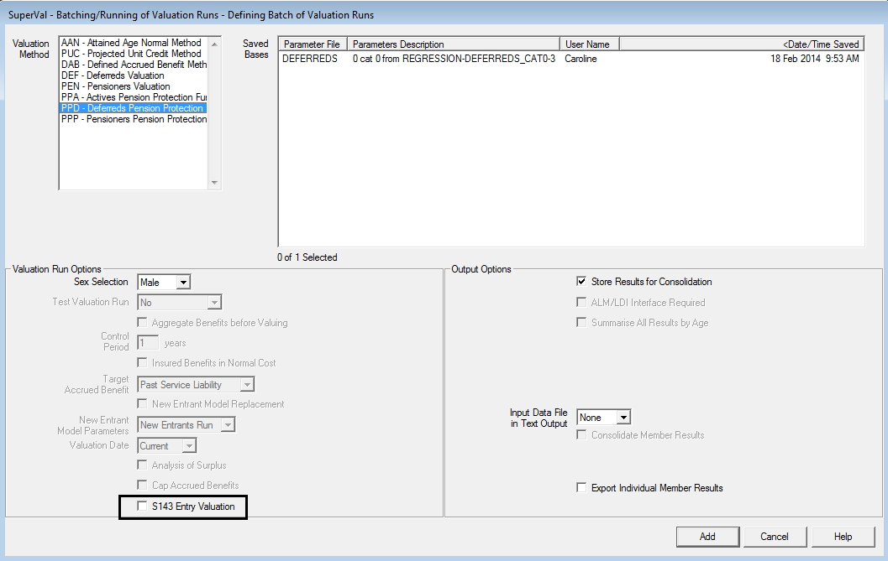
If running a Deferreds valuation, ensure the S143 Entry Valuation check box is unselected. (This option is not available on the Actives or Pensioners module.)
Click Add to add the Batch run and then select either an Unattended Run or an (attended) Run.
Changes to PPF assumptions¶
SuperVal V9.30.01 allows fully for the changes in the financial and demographic assumptions for PPF S179 (Levy) valuations ie those specified in guidance notes A4, A5, A6, A7, A8, A9, A10 and A11.
SuperVal assumes all pensions defined are revaluing. As noted earlier, the yields can be manipulated to allow for non-revaluing pensions if required. However, for pensioners, you can define a PPF Revaluation in Deferment for each pension defined.
To allow for the other changes, the user must define new PPF Sets for post 1 May 2021 valuations, which include the relevant updated assumptions.
Note, the relevant yield data must be input at Valuation Date and SuperVal will use the different formulae to determine the correct yields.
Output from PPF S179 runs¶
Excel results output¶
Excel output is available for all three modules. The output filenames are:
Actives | PPA (S179) using <basis filename> at <vdate>.xlsm
Deferreds | PPD (S179) using <basis filename> at <vdate>.xlsm
Pensioners | PPP (PPF) using <basis filename> at <vdate>.xlsm
The results will appear as follows:
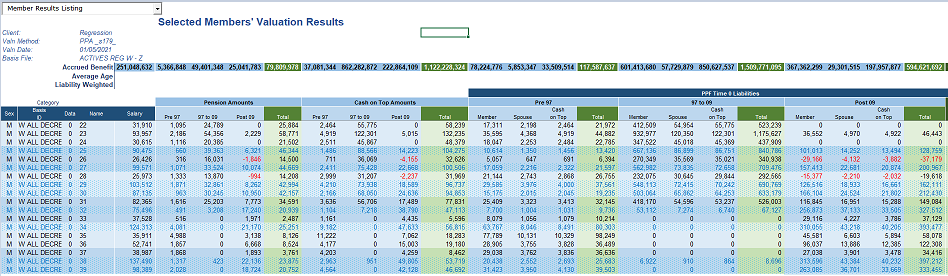
The liabilities are also shown separately for death-in-deferment benefits.
Any member who is affected by the Compensation Cap has a Yes
in the column Benefit Capped.
Varprint / Accprint¶
The single-life test files VARPRINT and ACCPRINT are not available for PPF runs.
Consolidation¶
Consolidation is carried out as for other funding methods. Under
Valuation Methods select PPF - Pension Protection Fund Levy.
You can define the name of each consolidation run. Each run will produce an Excel file and a database file.